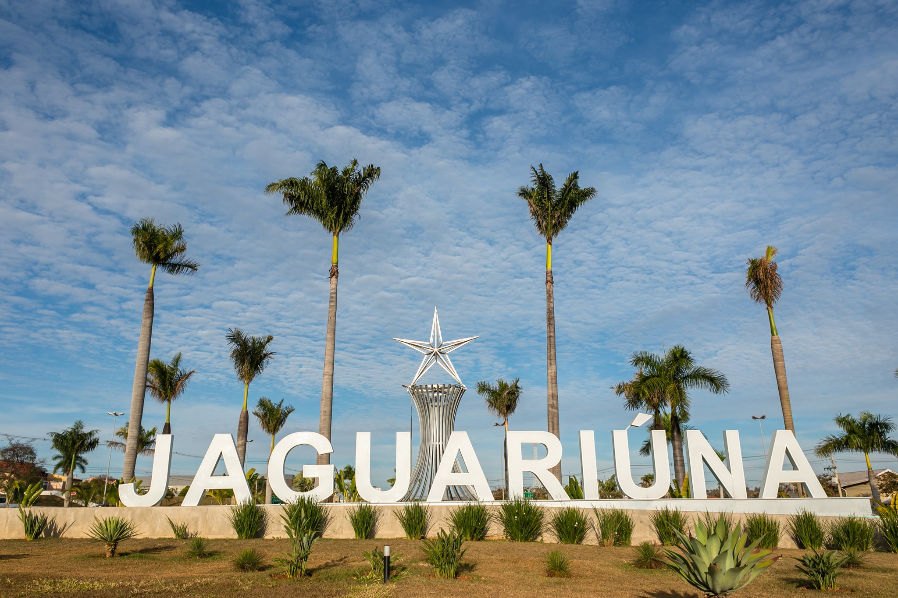

Jaguariúna é conhecida como a “cidade da cultura e tradição” do interior paulista, unindo história, eventos de grande porte e qualidade de vida. Seu nome vem do tupi e significa “rio da onça preta”, em referência às origens indígenas da região. O município se desenvolveu no século XIX com a chegada da ferrovia e, desde então, manteve a integração entre modernidade e preservação de suas raízes.
A cidade é famosa pelo Rodeio de Jaguariúna, um dos maiores eventos do Brasil, que movimenta o turismo e atrai visitantes de todo o país. Além disso, Jaguariúna valoriza a cultura local com centros artísticos, festas tradicionais e eventos que fortalecem sua identidade. O município também investe em inovação e sustentabilidade, buscando oferecer qualidade de vida à sua população.
Outro destaque é a preservação da memória ferroviária e da natureza. Os passeios turísticos na Maria Fumaça, somados aos parques urbanos e espaços culturais, tornam a cidade um destino encantador para famílias, estudantes e turistas em busca de lazer e conhecimento.
• Maria Fumaça – Passeio turístico de trem histórico que liga Jaguariúna a Campinas.
• Parque Santa Maria – Espaço de lazer com playground, trilhas e eventos culturais.
• Centro Cultural Zi Cartola – Local de valorização da arte, música e tradições da cidade.
• Rodeio de Jaguariúna – Evento tradicional que coloca a cidade no cenário nacional do entretenimento.

Retorne a Página Anterior